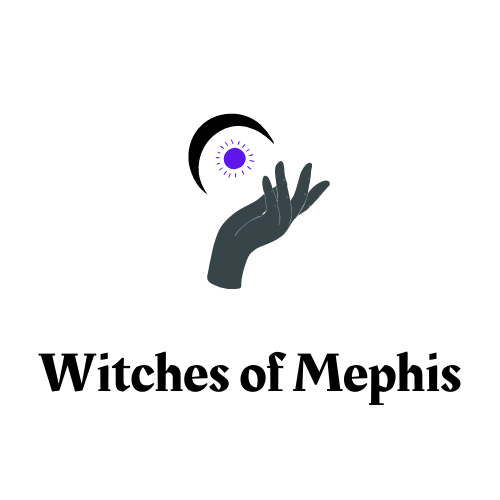

The Witches of Mephis
Families who trade a price for power. Every contract is signed in blood with one patron, and every contract must be renewed.
Lines without a tag are settled canon from the Witches of Mephis reference (v3). Tags mark anything less settled.
At a glance
- Patron
- Mephis, who is Mephithoveles, the first prince of Ishphaeno. The settlers of Emerson met him as Itzal, one of the many names he uses, and the Orendanansi line calls him Mefi.
- Power
- Blood contracts. The bond weakens over time and must be renewed every ten generations.
- Price
- Each contract gives a specialty and takes a sacrifice. The line’s head, or its symbolic signer, sets both.
- Blood
- Always AB positive or AB negative.
- Tools
- No wands. Talismans and artifacts help a witch focus, and some families craft enchanted items.
- Names
- A witch has a human name and a magus name. The magus name keeps the family line name so witches can recognise one another.
- Network
- Sixty schools in seven circles, joined as the Mephis Consortium. See The Mephis Consortium.
Origin
The patron has made contracts with bloodlines all over the world for about two thousand years. Emsehurst was not the first chapter. It is the showcase chapter, the main setting of the stories, and the most sophisticated structure he has built. Decided
The founding of the Emsehurst chapter
Eight families settled at the mouth of the Emerson, a tributary of the Squannock. Their leader was taken. The settlers who were taken came back possessed and killed two families, and a teenage girl, the sole survivor, was burned at the stake. Prayer failed. One family fled.
At sunset Itzal arrived and offered power in exchange for three things: Secrets, Pride and Servitude. The five founding lines of Emsehurst signed together, in the order Emmers, Bonchild, Gilbert, Somerhalder and Payne. They are the five witch signatories to Pandora’s Pact. Decided
Every other line has its own, separate origin date. Five more lines joined later, each on a different day. See the ten family lines.
Relations
| Who | How they stand |
|---|---|
| Pandora’s Pact | The Witches hold stewardship of their establishments, homes and places of practice, and their contracts are their own business. One witch from each of the five founding families signed in 1933 and again in 1964. |
| The Lamiae | See The Lamiae. Their blood is a major amplifier of witch spells, and for the strongest spells it may be necessary. |
| The Sekh | Sekh blood also works for enhancement spells on humans. The two peoples are opposed in principle over souls that are trapped and tricked. |
| The Anu | Opposed for the same reason. |
| The Human Coalition | Hostile in public, and in private some members buy enchanted items and fortifying spells from witches. |
Emblem
